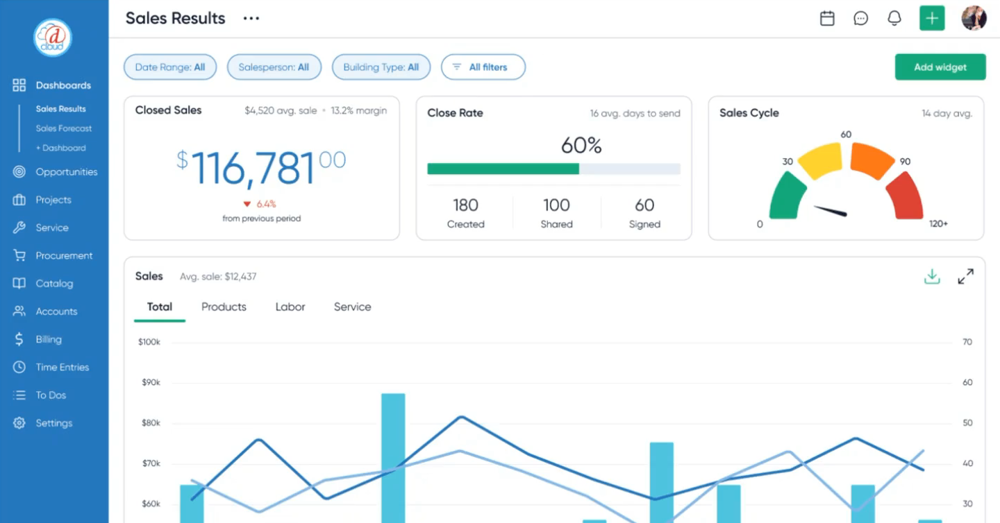

Custom Dashboards & AI Reporting
D-Tools Cloud shipped with a static dashboard that showed field technicians, project managers, and company owners the exact same charts. Because it didn't answer anyone's daily questions, most users ignored it. I redesigned the workspace around role-based starter templates, customizable widgets and views, and one-click AI reporting tied to on-screen metrics, driving 71% multi-dashboard adoption.

The Problem: Trapped in Pre-Canned Dashboards
For a 10-person residential AV company, high-level sales gauges were useless clutter. For a commercial contractor tracking $2M bids, daily service ticket counts got in the way. Because one static screen tried to serve everyone, managers defaulted to exporting raw tables into spreadsheets every week.
Goals
- Give each role (Field Dispatch, Sales, Accounting) a starter template that answers daily questions in under 30 seconds
- Let users resize, filter, and save multiple dashboard views without feeling like they are configuring a complex BI tool
- Scope AI summaries strictly to the active widgets on screen so every takeaway can be verified against visible numbers
Research Insights
To understand why teams abandoned existing analytics, I led 10 semi-structured discovery interviews: 6 with active power users (integrator ops managers, project leads, and accounting controllers) and 4 with internal stakeholders across sales, executives, and customer success.
Research Findings
-
Finding 1
Role & scale mismatch: A 12-person residential shop and a 60-person commercial contractor track completely different daily metrics.
-
Finding 2
Workflow friction: Integrators needed fast routines; customizing a daily view couldn't feel like building a report from scratch.
-
Finding 3
Stakeholder constraint: Sales reps needed immediate visual punch for live demos.
Design Decisions
-
Decision 1
Role-based templates: Replaced existing static layouts with starter templates matching specific company roles.
-
Decision 2
Direct card customization: Drag-and-drop rearrangement and simple AI reporting from active widgets.
-
Decision 3
Demo-ready views: Pre-populated executive layouts that sales could pull up instantly during discovery calls.
What I got wrong first
Early in wireframing, I pitched three static department layouts: Sales, Service, and Operations. But during user walkthroughs, the approach broke down immediately. A 12-person residential integrator runs completely differently than a 60-person commercial shop; their daily priorities had almost zero overlap. Hardcoded department views would have recreated the exact problem we were trying to fix. That pushed us toward modular role templates that managers could reorganize, filter, and save around their own routines.
| Integrator Cohort | Their Question | Where Hardcoded Views Failed |
|---|---|---|
|
Residential Integrator 10-15 staff |
"Is this month's revenue better than last month's?" | Current revenue totals lacked the prior-month context needed to show whether performance was improving. |
|
Commercial Integrator 50+ staff |
"Where are active change orders eroding our project margins?" | Margin impact was buried across individual change orders, making it difficult to see which active projects were losing profitability. |
Design Approach & Decisions
-
1. Responsive 12-Column Widget Grid
Rather than building isolated reporting pages, I designed a modular 12-column grid supporting three card footprints (Small counters, Medium trend charts, and Large data tables). Users could start from a role-specific template or a blank canvas, dragging and configuring cards to match their morning routine.
-
2. Grounded AI Reporting
Because every integrator combined a different set of widgets and filters, a static report template couldn't connect trends across cards, like pairing a dip in closed sales with a bottleneck in unshared quotes. To earn trust when margins and billable hours are on the line, I worked with backend engineering to scope the model strictly to the structured JSON returned by active on-screen widgets rather than open-ended database queries, keeping every claim verifiable next to the source chart.
Defining Decision: Dashboards Before AI
Leadership originally wanted to skip visual dashboards and build a chat prompt interface. In usability tests, however, integrators froze when faced with a blank chat box. AV integrators don't log in at 7:00 AM to write prompts. They need an immediate visual scan of how they can improve their business that day.
That testing convinced leadership to keep visual cards as the primary morning workspace and position AI as an on-demand report writer for monthly and quarterly owner reviews.
Execution Constraints: Role Permissions & Progressive Disclosure
One layout system had to work for company owners, operations leads, and sales reps without exposing sensitive financial data or leaving awkward blank gaps in shared templates.
Gating Restricted Data Without Breaking the Grid
Instead of showing locked placeholder cards, we omitted restricted widgets and secondary customization details, such as historical trend data, for roles without permission. The 12-column grid automatically reflowed remaining cards cleanly, and because the AI summary read only from the user's active on-screen widgets, restricted financial figures stayed out of generated reports as well.
Prototyping & Validation
Iteration: higher data density, tighter control
I tested the interactive Figma prototype with five power users. Integrators immediately rejected our early wireframes. They wanted compact counters (unassigned service calls, overdue milestones, low-stock flags) docked at the top of the screen above trend charts. Adding a Small stat card and drag-and-drop reordering took one extra sprint, but turned the dashboard into a daily second-monitor workspace.
In follow-up validation with the revised prototype:
- 4/5 users said the role templates matched how they already organized their week
- All 5 participants customized and saved a new dashboard without prompting
Impact: From Ignored Charts to a Daily Morning Habit
Measured at 30 days post-launch, 71% of active integrator accounts had created and maintained multiple custom dashboards, and weekly dashboard views rose 64% across consecutive quarters.
Users applied an average of 2.4 custom filter rules per card. Usage data also showed a clear split in daily habits: visual charts peaked between 6:45 AM and 8:15 AM as managers routed field crews, while AI reporting clicks surged at month-end and quarter-close when leads compiled owner reports. Commercially, the AI report also gave the sales team a concrete story to lead enterprise demos with, satisfying the original stakeholder goal without compromising the daily workspace.
Lesson
Executive excitement for conversational AI rarely matches how field integrators actually work. When operators are under morning time pressure, deterministic visual scanning beats open-ended prompting every time; AI earns trust when it steps in later to summarize verified numbers for stakeholder reviews.
What's Next
Because usage data showed AI reporting spiking at month-end and quarter-close, the next phase I scoped before leaving D-Tools was automated scheduled email digests and margin-threshold alerts so owners could receive their summary briefs without logging in.